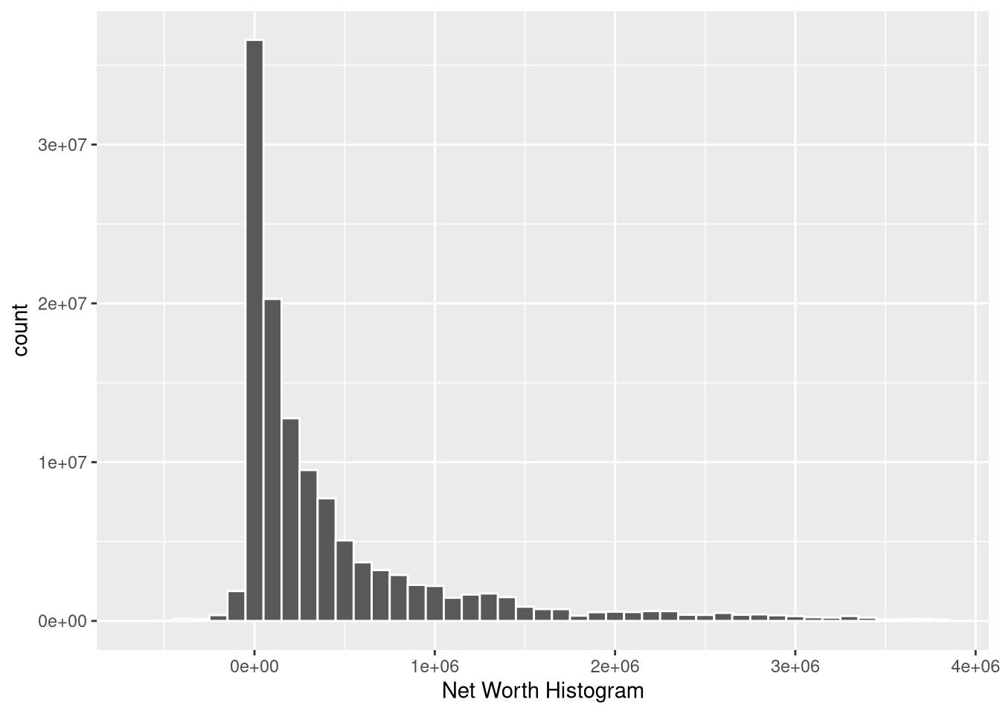
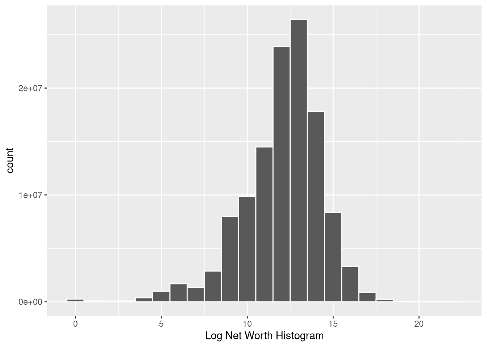
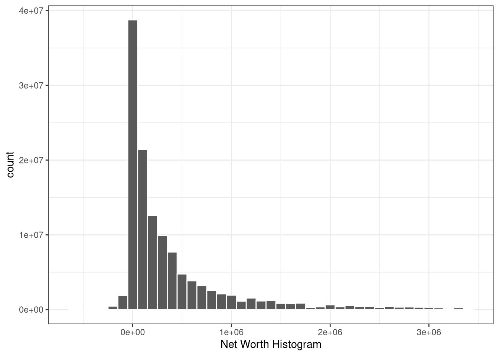
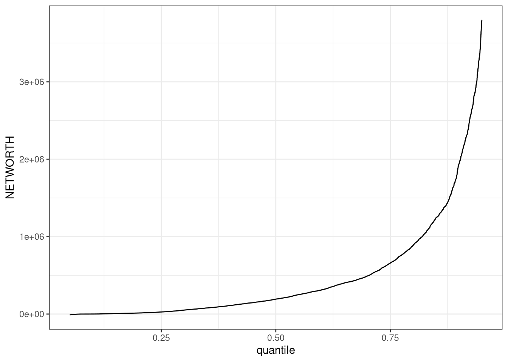

# I think this basically re-weights the survey and saves as complicated objectscf_design <-svrepdesign( weights =~wgt , repweights = scf_rw[ , -1 ] , data =imputationList( scf_imp ) , scale =1 ,rscales =rep( 1/998 , 999 ) ,mse =FALSE ,type ="other" ,combined.weights =TRUE )scf_design$designs <-lapply( scf_design$designs , convey_prep )scf_MIcombine( with( scf_design , svygini( ~ networth ) ) )
Multiple imputation results:
m <- length(results)
scf_MIcombine(with(scf_design, svygini(~networth)))
results se
networth 0.8299718 0.003921117
Code
# Approach 2 --------------------------------------------------------------# This approach uses the "Summary Extract Public Data" provided by the Fed and used in their own publications# Note this dataset has already constructed the NETWORTH variable we're interested in# Following here: https://medium.com/@candace_60118/survey-of-consumer-finances-scf-analyzing-weighted-data-in-r-4e4789112c8a# Also this: https://bookdown.org/jimr1603/Intermediate_R_-_R_for_Survey_Analysis/survey-specific-functions.html # Download the files# download.file("https://www.federalreserve.gov/econres/files/scfp2022excel.zip", "SCFP2022.zip")# unzip("SCFP2022.zip")df <-read.csv("SCFP2022.csv")%>%select(NETWORTH,WGT,OCCAT1)
Constructing a dataset
Histograms of wealth
Code
## Q1: Make two histograms for: (a) the level of wealth (only plot up to the 95th percentile)# Find 95th percq_95<-wtd.quantile(df$NETWORTH, q=0.95, weight = df$WGT)# Make hist up to 95th perchist1<-df%>%filter(NETWORTH<q_95)%>%ggplot(mapping =aes(NETWORTH,weight = WGT)) +geom_histogram(binwidth =100000,color ="white") +labs(x ="Net Worth Histogram")hist1

Code
## (b) the logarithm of wealth.# Make hist up to 95th perchist2<-df%>%filter(NETWORTH>0)%>%mutate(ln_networth =log(NETWORTH))%>%ggplot(mapping =aes(ln_networth,weight = WGT)) +geom_histogram(binwidth =1,color ="white") +labs(x ="Log Net Worth Histogram")hist2

Wealth shares
Code
## Q2: Make a table with the wealth shares of # (a) the bottom 50 percent, # (b) the next 40 percent, # (c) the next 9 percent, # (d) the top 1 percent,# (e) the top 0.1 percent of households in the sample.# Set up the quantile spacing needed for (a)-(e)quantiles_q2 =rbind(c(0,0.5),c(0.5,0.9),c(0.9,0.99),c(0.99,1),c(0.999,1))# Get total wealth to construct sharestotalwealth =sum(df$NETWORTH*df$WGT)# Find wealth (and entrepeneur) share for each quantilewealth_share<-list()ent_share<-list()for (i in1:nrow(quantiles_q2)){quantile_space = quantiles_q2[i,] wealth_lb<-wtd.quantile(df$NETWORTH, q=quantile_space[1], weight = df$WGT)wealth_ub<-wtd.quantile(df$NETWORTH, q=quantile_space[2], weight = df$WGT)wealth_sample<-df%>%# extract the relevant samplefilter(NETWORTH>wealth_lb)%>%filter(NETWORTH<wealth_ub)# Wealth share of that group wealth_share [[i]]=sum(wealth_sample$NETWORTH*wealth_sample$WGT) / totalwealth# No. entrepeneurs in that groupent_sample<-wealth_sample%>%filter(OCCAT1==2)ent_share [[i]]=nrow(ent_sample)/nrow(wealth_sample)}# Construct table table_shares <-cbind(unlist(wealth_share),unlist(ent_share))
The quantile function
Code
## Q3: Plot the quantile function# Choose number of points to fit to quantiles_q3 <-(seq(0, 1, by =0.01))# Find quantile at each point (using the weights) quantile_function<-cbind(quantiles_q3,wtd.quantile(df$NETWORTH, q=quantiles_q3, weight = df$WGT))%>% as_tibble%>%rename(quantile=quantiles_q3)%>%rename(value=V2)
Warning: The `x` argument of `as_tibble.matrix()` must have unique column names if
`.name_repair` is omitted as of tibble 2.0.0.
ℹ Using compatibility `.name_repair`.
Code
# Create the plotquantile_plot<-quantile_function%>%filter(quantile<0.95)%>%filter(quantile>0.05)%>%ggplot(aes(x=quantile,y=value))+geom_line()+theme_bw()# Alternate way to do all this manually by summing weightsquantile_function2<-df%>%arrange((NETWORTH))%>%mutate(cum_sum =cumsum(WGT))%>%mutate(WGT_TOTAL =sum(WGT))%>%mutate(quantile=cum_sum/WGT_TOTAL)%>%select(quantile,NETWORTH)quantile_plot2<-quantile_function2%>%filter(quantile<0.95)%>%filter(quantile>0.05)%>%ggplot(aes(x=quantile,y=NETWORTH))+geom_line()+theme_bw()# They look pretty similar quantile_plot

Code
quantile_plot2

The Lorenz curve
Code
## Q4: Plot the Lorenz curve# That was easylorenz(df$NETWORTH, weighting = df$WGT, z =NULL, na.rm =TRUE,lcx ="Income share", lcy ="Population share",lctitle ="Lorenz curve")
Entrepreneurs
Code
## Q5:For the wealth above the 90th percentile, plot log(1 − F (w)) against log w # where F (w) is the cumulative distribution function of wealth w.# Extract data for the top 10%q_90<-wtd.quantile(df$NETWORTH, q=0.90, weight = df$WGT)wealth_top10<-df%>%filter(NETWORTH>q_90)%>%# Construct CDF function by summing mass below each pointarrange((NETWORTH))%>%mutate(cum_sum =cumsum(WGT))%>%mutate(WGT_TOTAL =sum(WGT))%>%mutate(F=cum_sum/WGT_TOTAL)%>%# Construct the variables we needmutate(F_adj =log(1-F))%>%filter(NETWORTH>0)%>%mutate(log_w =log(NETWORTH))# Make plotplot_q5<-wealth_top10%>%filter(F<1)%>%ggplot(aes(x=log_w,y=F_adj))+geom_line()+theme_bw()plot_q5